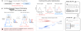
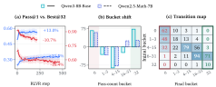
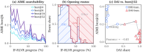
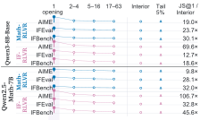
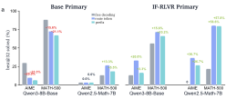
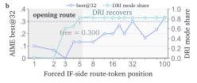
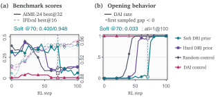
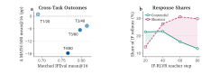

Catastrophic forgetting
Asks what performance or previously learned capability remains after adaptation. It is retrospective.
1Peking University 2BUPT
arXiv preprint, 2026.
On-policy verifiers do more than score sampled trajectories. They reshape which behaviors remain reachable, rewardable, and trainable next.

Open figureA capability can remain possible in principle yet become too rare to appear within the rollouts available to the next on-policy stage.
Asks what performance or previously learned capability remains after adaptation. It is retrospective.
Asks what reward-positive trajectory remains likely enough to discover and reinforce next. It is prospective and budget-dependent.
“A verifier does more than improve what the policy does now; it changes what the policy can still learn next.”
Repeated verifier-scored rollouts reveal both average success and the boundary of what remains searchable.
Starting from the same policy in each model family, one branch receives Math-RLVR and is evaluated for instruction-following support; the other receives IF-RLVR and is evaluated for math support. Each branch is then continued with the opposite verifier.
Each training configuration has one fixed-seed run. Repeated rollouts measure sampling variation within a policy, not uncertainty across independent training seeds.
Finding A
Math-RLVR moves mixed instruction-following prompts toward both extremes. An average rollout succeeds more often, yet a 32-rollout search finds a successful response for fewer prompts.

Open figure| Model | Benchmark | Δ pass@1 | Δ best@32 |
|---|---|---|---|
| Qwen3-8B-Base | IFEval | +0.065 | -0.098 |
| Qwen3-8B-Base | IFBench | +0.032 | -0.067 |
| Qwen2.5-Math-7B | IFEval | +0.079 | -0.114 |
| Qwen2.5-Math-7B | IFBench | +0.016 | -0.037 |
Finding B
AIME best@k falls at every tested budget, while visible openings move from deliberative-reasoning initiation (DRI) toward direct-answer initiation (DAI).
Pearson r = -0.85 is correlational. DRI and DAI classify the visible response opening; they do not reveal a hidden chain of thought or internal cognitive state.

Open figureDistributional analysis first locates the largest change. Controlled decoding interventions then test whether route selection itself changes downstream searchability. These are distinct pieces of evidence.
Localization
Mean Jensen-Shannon divergence is largest at the first generated token in every tested model, RLVR branch, and benchmark combination. On AIME, the first-to-interior ratio ranges from 9.8× to 106.7×.
High-divergence positions mostly reuse candidates already supported by Base, although IF-RLVR can also promote an initially low-probability opening token.

Open figureControlled intervention
From IF-RLVR checkpoints, forcing Base-side or DRI openings raises best@32 for both model families on AIME and MATH-500. A position sweep shows that the route-label effect is concentrated near the response opening.
The reverse intervention is not symmetric across model families. The evidence supports a causal, localized route-entry effect in the tested settings, not a broad rewrite or erasure of downstream reasoning.

Open figure
Open figureSequential training, reference-policy constraints, routing priors, and on-policy distillation each expose a different limit. None is a general solution in the reported experiments.
After IF-first training, the mixed-support group falls from 33.6% to 1.6% by step 20 of Math-RLVR, leaving little within-group reward variation. This path does not prove irreversible loss.
During Math→IF training, stronger reference constraints retain more math performance but yield smaller IF gains. No tested coefficient retains math while matching unconstrained IF adaptation.
With a converged IF teacher, MATH-500-128 mean@16 falls from 0.3433 to 0.0879 and shortcut responses rise from 4.5% to 18.8%. Across the sampled teachers, teacher and student shifts are negatively associated (Spearman ρ = -0.594); a coarse scan of four earlier states favors different target and retention outcomes.

Open figure
Open figureMathIF and ReasonIF provide an independent endpoint stress test. Correctness C and strict instruction following F can improve in different responses; joint support requires J = C ∧ F in the same rollout.
| Benchmark | Checkpoint | Correctness C | Following F | Joint J = C ∧ F |
|---|---|---|---|---|
| MathIF | Base | 0.359 | 0.250 | 0.094 |
| Math-RLVR | 0.472 | 0.253 | 0.118 | |
| IF-RLVR | 0.377 | 0.431 | 0.148 | |
| ReasonIF | Base | 0.467 | 0.239 | 0.109 |
| Math-RLVR | 0.522 | 0.235 | 0.126 | |
| IF-RLVR | 0.438 | 0.391 | 0.171 |
Target-aligned marginal gains are substantially larger than the resulting joint gains. Improving one verifier does not automatically produce responses that are both correct and constraint-following.
Endpoint performance is not enough to characterize an on-policy training stage. Searchability and reward variation determine what a later verifier can still discover and amplify.
Effective rewardable support should be monitored across rollout budgets and plausible future objectives. Preservation methods should be evaluated jointly by target gain, retained cross-verifier support, and response quality—not by the current verifier alone.
Verifier-Induced Support Reshaping in On-Policy Optimization
arXiv:2608.00220 [cs.LG], with cs.CL as a secondary category. First submitted July 31, 2026.
Correspondence: Houfeng Wang and Shaohang Wei.
@misc{wei2026verifier,
title = {Verifier-Induced Support Reshaping in On-Policy Optimization},
author = {Shaohang Wei and Zikun Su and Feifan Song and Wen Luo and Wei Li and Guangyue Peng and Houfeng Wang},
year = {2026},
eprint = {2608.00220},
archivePrefix = {arXiv},
primaryClass = {cs.LG},
doi = {10.48550/arXiv.2608.00220},
url = {https://arxiv.org/abs/2608.00220}
}The release supports inspection of training recipes, verifier implementations, evaluation protocols, non-visual analyses, and selected numeric tables. It is not a one-command reproduction of every reported result.
{kind=link}
{kind=link}
{kind=link}
{kind=link}
{kind=link}